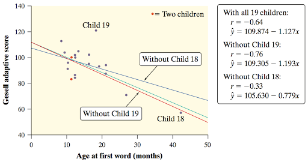

16 Linear Regression
16.1 Scatter plots
A scatter plot is a graph that shows the relationship between two quantitative variables measured on the same individuals. The values of one variable appear on the horizontal axis, and the values of the other variable appear on the vertical axis. Each individual in the data is represented as a point on the graph. We want to know if there is any relationship between the two quantitative variables. In other words, as the x-value increases, does the y-value tend to increase, decrease, or stay the same? Or do the two variables appear to be related at all? Are there any outliers? A scatter plot allows us to answer these questions visually. In a scatter plot, the y-axis is always the response variable (which measures an outcome of a study) the x-axis is always the eXplanatory variable (which may help explain or influence changes in the response variable).
We can describe the relationships between two quantitative variables through their scatter plot’s:
Strength: The degree to which the points follow a pattern
Form: Linear or non-linear
Direction: Positive or negative association
Outliers: Individual observations that fall outside the overall pattern
Make sure to remember these small details when describing your scatterplots.
- You should remember to describe your strength and direction of the relationships through the form of the relationship.
- Likewise, describe your outliers through the form of the relationship.
- Make sure to include the context of the problem when you are describing the relationship.
16.1.1 An example of a scatter plot
Here’s an example of a scatter plot, with the iris data set of just the setosa species:
Let’s say that we are trying to see if sepal length and sepal width have a relationship, specifically, if sepal length can explain the differences in sepal width between irises. This makes our explanatory variable the sepal length and the response variable the sepal width.

Based off this plot, I would say that there is a moderately, positive, linear relationship between sepal width and sepal length. The point (4.5, 2.3) might be an outlier.
16.2 Least Squares Regression Model
Suppose that we have a response variable \(y\), and an explanatory variable \(x\). If the relationship between the two variables is linear, then the relationship can be modeled by the following model:
\[y = \alpha + \beta x + \epsilon\]
Where
\(y\) is the value of the response variable for a given value of the explanatory variable \(x\) and some underlying “noise” \(\epsilon\).
\(\alpha\) is the y-intercept, the value of \(y\) when \(x=0\)
\(\beta\) is the slope, and
\(\epsilon\) is the underlying “noise”/error that we can expect out of the relationship.
An estimate of this model would then have the following form:
\[\hat y = a + bx\]
Where
\(\hat y\) is the predicted value of the response variable \(y\) for a given value of the explanatory variable \(x\)
\(a\) is a statistic that estimates \(\alpha\), the y-intercept, and provides the value of \(\hat y\) when \(x=0\).
\(b\) is a statistic that estimates \(\beta\), the slope.
We interpret \(a\) and \(b\) as:
- Sample sentence frame for a Y-INTERCEPT
- When the [explanatory variable] is zero, our model predicts the [response variable] would be [y-intercept].
- Sample sentence frame for a SLOPE:
- For every 1 [unit] increase in [explanatory variable], our model predicts an average change of [slope] in [response variable]
16.2.1 Correlation
A scatterplot displays the strength, direction, and form of the relationship between two quantitative variables. Linear relationships are important because a straight line is a simple pattern that is quite common. Unfortunately, our eyes are not good judges of how strong a linear relationship is. The correlation \(r\) measures the direction and strength of the linear relationship between two quantitative variables.
\[r = \frac{1}{n-1}\sum \left( \frac{x_i - \bar x}{s_x}\right) \left( \frac{y_i -\bar y}{s_y}\right)\]
\(r\) is always a number between -1 and 1
\(r > 0\) indicates a positive association.
\(r < 0\) indicates a negative association.
Values of \(r\) near 0 indicate a very weak linear relationship.
The strength of the linear relationship increases as \(r\) moves away from 0 towards -1 or 1.
The extreme values \(r = -1\) and \(r = 1\) occur only in the case of a perfect linear relationship.
Correlation makes no distinction between explanatory and response variables.
\(r\) does not change when we change the units of measurement of \(x\), \(y\) or both.
The correlation \(r\) itself has no unit of measurement.
CORRELATION DOES NOT IMPLY CAUSATION!!!
Correlation requires that both variables be quantitative.
Correlation does not describe curved relationships between variables.
A value of \(r\) close to -1 or 1 does not guarantee a linear relationship between them.
Correlation is not resistant: \(r\) is strongly affected by a few outlying observations
What would be the effect of removing the outlier on the correlation?
Correlation is not a complete summary of two-variable data.
The correlation \(r\) only informs us how well the data can conform to a line (the strength of a linear relationship), and the direction of of the relationship. Otherwise, depending on \(r\) is hard unless we look at a couple of other things, such as a residual plot.
To interpret values of \(r\), follow this sentence frame:
There is a [strength], [direction] relationship between the [explanatory variable] and the [response variable]
16.2.2 Residuals
In most cases, no line will pass through all of the points in a scatter plot. Because we use the line to predict \(y\) from \(x\), the prediction errors we make are errors in \(y\), the vertical direction in the scatter plot. A regression line using our least squares method minimizes the squared residuals.
A residual is the difference between an observed value of the response variable and the value predicted by the regression line. That is,
\[r_i= \text{residual for the ith value}=\text{observed } i^{th} \text{ y value}-\text{predicted } i^{th} \text{ y value}=y_i-\hat y_i\]
Interpreting RESIDUALS :The actual [response variable] for [specific value of the explanatory variable], is [greater than/less than] the predicted [response variable] by [residual value].
All the equations that we learn in this chapter are based off the fact that a least squares regression line minimizes the squared vertical deviations of the points from the line. In this course, you do not have to know the underlying proofs for the formulas.
16.2.2.1 Residual Plots
We can plot the residuals versus the explanatory variable to obtain insight into the appropriateness of our regression model:
Look for:
- Curved pattern
- if there’s a curved pattern in our residuals, that means there’s a curved pattern in our observations that we didn’t notice before, probably because of the scale of our scatterplot. A curved pattern means that a linear model (like an LSR line) is probably not appropriate to describe our data. We should try to use a non-linear model (we’ll look at these in Chapter 4).
- Heteroskedasticity
- In other words, is there a pattern in our plot? If the residuals are getting larger at one or both ends of the data, that means our model is not predicting as well in those areas (remember that a big residual = a big error in prediction) and shouldn’t be used to make predictions for those values of our explanatory (x) variable.
16.2.2.2 Standard Deviation of Residuals
To assess how well the line fits all the data, we need to consider the residuals for each observation, not just one. Using these residuals, we can estimate the “typical” prediction error when using the least-squares regression line.
If we use a least-squares regression line to predict the values of a response variable \(y\) from an explanatory variable \(x\), the standard deviation of the residuals (\(s\)) is given by
\[s = \sqrt{\frac{\sum (residuals ^2)}{n-2}}=\sqrt{\frac{\sum (y_i - \hat y_i)^2)}{n - 2}}\]
This value gives the approximate size of a “typical” prediction error (residual).
Sample Sentence Frame
When using the LSRL with [explanatory variable] to predict [response variable], we will typically be off by about [the value of \(s\) with units of the response variable (\(y\))].
16.2.2.3 Coefficient of Determination
When we do the least squares model, we minimize the squares of the residuals, but what can we compare this to? We compare it to another line (a “baseline” model), that always predicts the mean of \(y\) for any value of \(x\). In other words, we compare it to \(\hat y = \bar y\). We do this since this baseline model practically means that are are saying that there is no relationship between \(x\) and \(y\). On the other hand, in the least squares model, we are trying to say that there is a relationship.
The coefficient of determination, \(r^2\) is defined by the % reduction in squared error that using a least squares model has in comparison to the baseline model.
\[r^2 = \frac{\text{size of reduction}}{\text{original amount}} = \frac{SST - SSE}{SST} = 1 -\frac{SSE}{SST} = 1 - \frac{\sum (y_i-\hat y)^2}{\sum (y_i - \bar y)^2}\]
16.2.3 Other definitions
Sometimes you’re just given a summary of the data instead of every single point. In this case, you can still find a (the y-intercept) and b (the slope) of the LSR line, and write the equation. To do this you need to know the following:
Remembering the basic notation from least squares regression model,
\[b=r\frac{s_y}{s_x}\]
The LSR line always passes through the mean of both the \(x\) and \(y\) variables, \[(\bar x, \bar y)\]. So when you apply slope-point formula and the using \(b\) as calculated above, we can find that:
\[a=\bar y-b\bar x\]
16.3 Doing it in your calculator:
Enter your \(x\) and \(y\) into two lists in your calculator (access it by
STAT > EDIT).Go to
STAT > CALC > LinReg(a+bx). The usage for this will be:LinReg(a+bx) explanatory list, response list, desired equation destination- An example would be:
LinReg(a+bx) L1, L2, Y1 - You assess the function variables by going to:
VARS > Y-VARS > Functionand you can choose any one that you want (normallyY1)
- An example would be:
Enter the command.
- You’ll see the value for
a,b,r2, andr - You’ll also be able to observe a few other things
- Since you entered a destination for your equation, your equation will be saved (go to
Y=and look at your equations there) - The residuals for each observation will also be calculated, which you can see in the
RESIDlist (go to2nd > stat (list)and scroll down to see it)
- Since you entered a destination for your equation, your equation will be saved (go to
- You’ll see the value for
Plot the scatterplot (and regression line):
Go to
2nd > Y= (stat plot)and choose any of the plots.Choose
Onand the scatter plot (first option)Specify the list for the
XlistandYlistGo to
Y=and make sure the=for the regression equation is on (highlighted)Do
zoom > ZoomStat. This ensures everything is in your graphing window and takes you to the graph.
Plot the residual plot:
Repeat the previous steps, except you don’t need to plot your regression equation, you can can un-highlight it (just go the = and hit enter). Change the Ylist to RESID in your stat plot plot so that you are plotting the residuals against the x-values.
16.4 Miscellaneous Things to Remember
The distinction between explanatory and response variables is important in regression. Least-squares regression makes the distances of the data points from the line small only in the y direction. If we reverse the roles of the two variables, we get a different least-squares regression line. This isn’t true for correlation: switching x and y doesn’t affect the value of r.
Correlation and regression lines describe only linear relationships. You can calculate the correlation and least-squares line for any relationship between two quantitative variables, but the results are useful only if the scatterplot shows a linear pattern. ALWAYS PLOT YOUR DATA.
Correlation and least-squares regression lines are not resistant.

Remember, an outlier is an observation that lies outside the overall pattern of other observations. In bivariate (2-variable) data, an outlier can either be an outlier in the x-direction, the y-direction, both, or neither.
An influential observation in statistics is a point that has a large effect on a statistical calculation. In other words, an observation is considered influential if removing it would markedly change the regression line.
Which appears to have the greatest influence on the position of the regression line?
Child 18 is the most influential observation here. Notice how removing (and adding) child 18 caused the greatest change in the regression line. Child 19 is a close one, but Child 18 has the most influence.
We could say that Child 18 is an outlier in the x-direction and y-direction meanwhile child 19 is an outlier in the y-directionWill influential observations always have large residuals? Why/why not? Try to find some examples on your own first.
No, take the previous example for instance. Child 18 has an extremely small residual in the plot.
So, influential observations actually often have small residuals. This is because they have “influence” on the line; they “pull” the regression line towards them. So if the regression line is closer to them, then they have a small residual.- Correlation does not imply causation. When we study the relationship between two variables, we often hope to show that changes in the explanatory variable cause changes in the response variable. A strong association between two variables is not enough to draw conclusions about cause and effect. We’ve learned how to draw cause and effect relationships and the scope of inference.
Consider the study that found people with two cars live longer than people who only own one car. Owning three cars is even better, and so on. There is a substantial positive association between the number of cars x and the length of life y. The basic meaning of causation is that by changing x, we can bring about a change in y. Could we lengthen our lives by buying more cars?
No. This does not even make sense to happen. What does make sense is looking between the lines and determining that there are other factors at play. A common variable here that would confound this relationship (confounding variable) would be the wealth of individuals. By having more wealth, you have more cars and are likely to live longer. Since this factor is in play, it’s likely the real reason why we see this positive relationship between number of cars and length of life.16.5 Interpreting Computer Output
You are expected to know how to interpret computer out in MINITAB format (just what you normally see).
See the next section for the rest of the interpretation
16.5.1 Example
Below is the computer output from a basic regression analysis for the Ford-F-150 data relating the mileage and value of Ford F-150s.
Predictor Coef SECoef T P
Constant 38257 2446 15.64 0.000
Miles Driven -0.16292 0.03096 -5.26 0.000
S = 5740.13 R-Sq = 66.4% R-Sq(adj) = 64.0%Let’s first identify a few basic facts, when we have a LSRL, the line is of form \[\hat y = a + b x\]
From our basic knowledge of algebra, \(b\) is the coefficient of \(x\) in the equation and the only things that we really need values (estimates) for are \(a\) and \(b\). So the two rows of interest for now are looking at the Predictor and the Coef of the Predictor.
What is a predictor?
What variable are we using to “predict”? Obviously, we are trying to predict \(y\) based off \(x\), so \(x\) is our “predictor” and the constant term \(a\) in the equation is actually included here too, since it’s involved in our prediction.We can identify that our explanatory variable is mileage (Miles Driven) and our response variable is the value of the Ford F-150.
So what we can figure out from these math facts here are that each value correspond to the following:
Predictor Coef SECoef T P
Constant a 2446 15.64 0.000
Miles Driven b 0.03096 -5.26 0.000
S = s R-Sq = r^2 R-Sq(adj) = 64.0%To reiterate, we can figure out that for a LSRL with this data and knowing our explanatory variable is mileage (Miles Driven) and our response variable is the value of the Ford F-150,
\[ \begin{aligned} &a = 38257\\ &b = -0.16292\\ &s = 5740.13\\ &r^2 = .664 \end{aligned} \]
Thus our LSRL is \[\hat{\text{value of F-150}} = 38257 - 0.16292 (\text{miles driven})\]
With \(s = 5740.13\) and \(r^2 = .664\).
We can also infer from this output that since \(b\) is negative (negative slope, so negative relationship), that \[r = -\sqrt{r^2} \approx -\sqrt{.664} \approx -0.8149 \]
Other parts are irrelevant to this chapter.